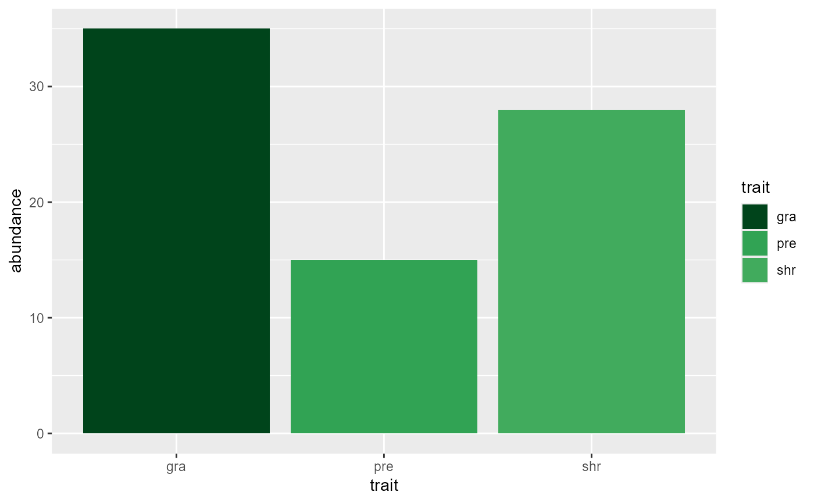

FFCol.RdReturns a named vector with predefined colors for functional trait modalities of freshwater benthic macroinvertebrates.
FFCol()A named vector with color codes for functional traits including feeding habits, microhabitat preferences, substrate type, food sources, feeding type, locomotion, respiration, body size, life cycle duration, and voltinism.
This comprehensive palette covers multiple functional trait categories:
Feeding habits (FED): gra (grazers), min (miners), xyl (xylophagous), shr (shredders), gat (gatherers), aff (active filter feeders), pff (passive filter feeders), pre (predators), par (parasites), othF (other)
Microhabitat (MH): arg (argyllal), pel (pelal), psa (psammal), aka (akal), lit (lithal), phy (phytal), pom (POM), othM (other)
Substrate (SBT): fbcp (flags/boulders/cobbles/pebbles), grvl (gravel), sand, silt, macp (macrophytes), micp (microphytes), twro (twigs/roots), odli (organic detritus), mud, othS (other)
Food (FD): mior (microorganisms), detl1 (detritus <1mm), dpg1 (dead plants), limi (living microphytes), lima (living macrophytes), dag1 (dead animals), lmic (living microinvertebrates), lmac (living macroinvertebrates), vert (vertebrates)
Feeding type (FEH): abs (absorbers), dpf (deposit feeders), shr (shredders), scr (scrapers), fif (filter-feeders), pie (piercers), preFt (predators), parFt (parasites)
Locomotion type (LoTy): sws (swimming/skating), swd (swimming/diving), bub (burrowing/boring), spw (sprawling/walking), ses (sessile), othL (other)
Locomotion substrate (LoSb): flr (flying), ssw (surface swimming), wsw (water swimming), crw (crawling), bur (burrowing), int (interstitial), tat (temporarily attached), pat (permanently attached)
Respiration (Res): teg (tegument), gil (gill), pls (plastron), spi (spiracle), ves (hydrostatic vesicle), sur (surface excursion)
Body size (MPS): L25 (\(\le\)0.25cm), 25To5 (>0.25-0.5cm), 5To1 (>0.5-1cm), 1To2 (>1-2cm), 2To4 (>2-4cm), 4To8 (>4-8cm), H8 (>8cm)
Life cycle (LiCy): <1y (\(\le\)1 year), >1y (>1 year)
Voltinism (Vol): <1 (semivoltine), 1 (monovoltine), >1 (polyvoltine)
Color schemes are organized by functional categories using distinct color gradients to facilitate visual interpretation of community functional structure.
# Get the complete freshwater trait palette
fw_colors <- FFCol()
# View all available trait modalities
names(fw_colors)
#> [1] "gra" "min" "xyl" "shr" "gat" "aff" "pff" "pre" "par"
#> [10] "othF" "arg" "pel" "psa" "aka" "lit" "phy" "pom" "othM"
#> [19] "fbcp" "grvl" "sand" "silt" "macp" "micp" "twro" "odli" "mud"
#> [28] "othS" "mior" "detl1" "dpg1" "limi" "lima" "dag1" "lmic" "lmac"
#> [37] "vert" "abs" "dpf" "shr" "scr" "fif" "pie" "preFt" "parFt"
#> [46] "sws" "swd" "bub" "spw" "ses" "othL" "flr" "ssw" "wsw"
#> [55] "crw" "bur" "int" "tat" "pat" "teg" "gil" "pls" "spi"
#> [64] "ves" "sur" "L25" "25To5" "5To1" "1To2" "2To4" "4To8" "H8"
#> [73] "<1y" ">1y" "<1" "1" ">1"
# Get colors for feeding habits only
feeding_colors <- fw_colors[c("gra", "min", "xyl", "shr", "gat",
"aff", "pff", "pre", "par")]
# Use in a plot
library(ggplot2)
trait_data <- data.frame(
trait = c("gra", "shr", "pre"),
abundance = c(35, 28, 15)
)
ggplot(trait_data, aes(x = trait, y = abundance, fill = trait)) +
geom_bar(stat = "identity") +
scale_fill_manual(values = FFCol())
